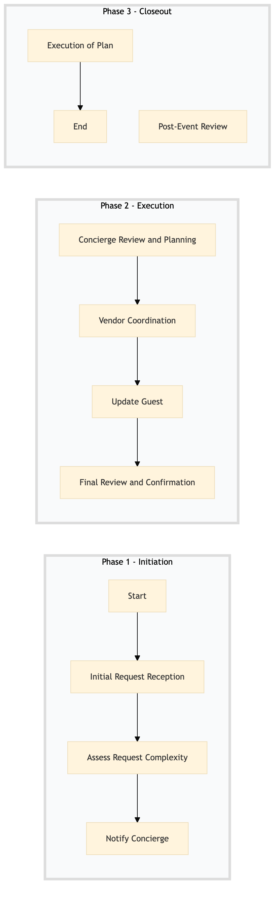

| Role | Steps |
|---|---|
| Front Desk Agent | 1.1 1.2 1.3 |
| Concierge | 2.1 2.2 2.3 3.1 3.3 |
| Housekeeping, Food & Beverage Staff | 3.2 |
| Step | Name | Role | System | Input | Output | KPI | Dec? | Exc? | Pain Point / Risk |
|---|---|---|---|---|---|---|---|---|---|
| 1.1 | Initial Request Reception | Front Desk Agent | Oracle OPERA Cloud | Guest request form or verbal communication | Request logged in Oracle OPERA Cloud | Less than 5 minutes | Y | N | Handling detailed requests efficiently |
| 1.2 | Assess Request Complexity | Front Desk Agent | Oracle OPERA Cloud | Logged request details | Complexity assessment and resource allocation plan | Less than 3 minutes | Y | N | Resource availability for complex requests |
| 1.3 | Notify Concierge | Front Desk Agent | Oracle OPERA Cloud | Complexity assessment and plan | Notification to Concierge via Oracle OPERA Cloud | Less than 2 minutes | N | N | Timely communication with Concierge |
| 2.1 | Concierge Review and Planning | Concierge | Oracle OPERA Cloud, IDeaS G3 RMS | Notification from Front Desk Agent | Detailed plan including venue setup, catering, entertainment, etc. | Less than 15 minutes | Y | N | Coordinating multiple vendors and services |
| 2.2 | Vendor Coordination | Concierge | Birchstreet Procurement, Oracle OPERA Cloud | Detailed plan | Confirmed vendor schedules and contracts | Less than 30 minutes | Y | N | Vendor availability and contract terms |
| 2.3 | Update Guest | Concierge | Oracle OPERA Cloud, Marriott Bonvoy CRM | Confirmed vendor schedules | Guest notification via email or phone | Less than 5 minutes | N | N | Effective communication with guests |
| 3.1 | Final Review and Confirmation | Concierge | Oracle OPERA Cloud, IDeaS G3 RMS | Guest confirmation | Final plan approval | Less than 10 minutes | Y | N | Ensuring all details are correct |
| 3.2 | Execution of Plan | Concierge, Housekeeping, Food & Beverage Staff | Oracle OPERA Cloud, Oracle MICROS Simphony | Final plan approval | Successful execution of the special occasion or surprise arrangement | On-time completion | N | Y | Smooth coordination during event |
| 3.3 | Post-Event Review | Concierge, Front Desk Agent | Oracle OPERA Cloud, Marriott Bonvoy CRM | Guest feedback and post-event report | Updated guest profile and system documentation | Less than 24 hours | N | N | Capturing valuable guest insights |
A process to handle special occasion and surprise arrangements at a full-service Marriott hotel, ensuring seamless coordination between departments and systems.